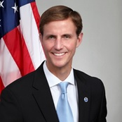

MG Scott Spellmon Turns over CMTS Coordinating Board Chairmanship to Department of Commerce, RDML Tim Gallaudet
Posted On: August 5, 2019
On August 1, 2019, Chairmanship of the CMTS Coordinating Board rotated from the U.S. Department of Defense to the U.S. Department of Commerce (DOC). Commerce Secretary Wilbur Ross designated Rear Admiral Tim Gallaudet (U.S. Navy ret.), Assistant Secretary of Commerce for Oceans and Atmosphere and Deputy Administrator of the National Oceanic and Atmospheric Administration (NOAA), as the Chairman on behalf of DOC and NOAA. RDML Gallaudet will Chair the CMTS Coordinating Board from August 1, 2019 through July 31, 2020 and follows a year of leadership by MG Scott Spellmon, Deputy Commanding General for Civil and Emergency Operations at the U.S. Army Corps of Engineers.

Dr. Timothy Cole Gaullaudet, Rear Admiral, US Navy (retired), CMTS Coordinating Board
The following message from RDML Gallaudet identifies NOAA’s priorities for this coming year. (For the full letter, please read his message from leadership.
The goal for NOAA’s CMTS chairmanship in 2019-2020 is To Advance U.S. Maritime Competitiveness. This goal follows the priorities of our 2017-2022 CMTS National Strategy “Channeling the Maritime Advantage” to promote a safe, secure, efficient and robust marine transportation system. Secretary Chao, summed it up well in her transmittal letter to Congress, “A modern, intermodal transportation system is critical to the competitiveness of our country’s economy, the maritime mode is the backbone to international trade.” …
As we update the CMTS FY2019-2020 Work Plan and continue to implement the National Strategy, I am excited that work is already underway to advance maritime competitiveness. As chair, I will emphasize 5 priorities that support this goal and align with the National Ocean Policy:
1. Assess the State of the U.S. MTS
2. Advance U.S. MTS Data and Technology
3. Enhance U.S. MTS Infrastructure
4. Promote Partnerships That Support the U.S. MTS
5. Increase U.S. MTS Engagement in the Arctic and Pacific Islands
Thank you in advance for supporting these priorities that will advance U.S. Maritime Competitiveness, and I look forward to another successful year for the CMTS.
Rear Admiral Tim Gallaudet
Assistant Secretary of Commerce for Oceans and Atmosphere
Deputy NOAA Administrator
CMTS-TRB 4th Biennial R&D Conference Summary Now Available
Posted On: November 3, 2016
The conference brought together approximately 130 attendees from government, industry, academia, and beyond. These participants made the event the largest marine transportation system (MTS) research and development (R&D) conference yet, with 19 breakout sessions, 3 plenary sessions, 3 keynote addresses, a student honors panel, and the closing summary session.
The sessions discussed not only the latest innovative technologies and practices in marine transportation and waterways management but also strove to contemplate the MTS of the next 100 years and the R&D needed to get there successfully. Participants from students to keynote speakers to research experts championed the need to continually adapt and innovate to tackle ever-changing challenges.
The CMTS-TRB 4th Biennial R&D Conference Summary details the key takeaways from the conference in order to inform the broader strategy for MTS-related research and development over upcoming years. It presents the notable Keynote thoughts and visions, a synopsis of each of the panel discussions, and the major points discussed in the many Technical Breakout Sessions. The document also identifies the specific gaps and needs the MTS should be addressing in order to inform future research prioritization.
U.S. Federal Activities Analyzing Marine Transportation System Resilience
Posted On: January 5, 2016
The goal of developing this report was to understand the scope of MTS resilience and highlight promising avenues for future work and collaboration. The report points out that agencies are investing in significant activities toward infrastructure resilience in terms of forecasting change, providing data and information, and managing and monitoring navigability as it relates to natural and built infrastructure as well as advancing the safety, environmental integrity, and economic visibility of the MTS. Two appendices are included with the summary report. Appendix A is a compilation of graphs that document the magnitude of agency activities for both environmental and non-environmental resilience factors. Appendix B contains a matrix that details the types of activities that each agency has undertaken for each of the resilience factors. Contacts: Katherine Touzinsky (Katherine.F.Touzinsky@usace.army.mil), Julie Rosati (Julie.D.Rosati@usace.army.mil), and Audra Luscher (Audra.Luscher@noaa.gov).
CMTS Webinar on Public-Private Partnerships in the U.S. Arctic
Posted On: November 4, 2015
The webinar will be presented by Captain Kirsten Martin, Senior Maritime Advisor to the DOT Secretary, and Dr. Alyson Azzara, Arctic Maritime Advisor to the CMTS; Ms. Helen Brohl, CMTS Executive Director, will moderate. Information on access the webinar is provided in the attached notice. Registration for the webinar is not required. Please direct questions and provide additional comments regarding P3s in the Arctic to ArcticMTS@cmts.gov. We respectfully ask that written comments be made to us by November 25, 2015.
CMTS Hosts Second Military to Mariner Federal Workshop
Posted On: May 2, 2015
Maritime Administrator Jaenichen Paul "Chip" Jaenichen, Administrator, Maritime Administration, and John Thackrah, Executive Director, Military Sealift Command, opened the proceedings, citing the importance of this Federal initiative as part of the solution to our nation's continuing need for qualified seafarers to support our economy and national defense.
Following a brief report on recent legislative changes and a review of the challenges and opportunities identified in the first CMTS Military to Mariner Federal Roundtable, Department of Labor Veterans Education and Training Service (VETS) Deputy Assistant Secretary for Policy Teresa "Terry" Gerton provided an overview of VETS programs and services. Ms. Gerton's presentation is available for viewing
here.
John Schwartz, the Transportation Security Administration's Maritime Program Director for the Transportation Workers Identification Card (TWIC), presented an overview of the TWIC program. Click here to view Mr. Schwartz's presentation.
The CMTS Military to Mariner Federal Workshop discussion focused on identifying Federal actions to be taken to facilitate the transition of sea service veterans to the U.S. Merchant Marines.
CMTS Adopts S-100 as Preferred Data Framework
Posted On: July 1, 2014
The Coordinating Board of the U.S. Committee on the Marine Transportation System adopted the International Hydrographic Organization's S-100 Universal Hydrographic Data Model as its preferred data framework for the dissemination and exchange of digital marine safety information and related MTS data collection requirements
The U.S. vision for e-Navigation (see the CMTS e-Navigation Strategic Action Plan, February 2012) is to establish a framework that enables the transfer of data between and among ships and shore facilities and that makes the data usable for decision-making. The use of standards is a recognized method of facilitating such data transfers and harmonization.
The International Hydrographic Organization's S-100 Universal Hydrographic Data Model and its supporting S-10x standards provide a framework for developing maritime data product specifications. The S-100 framework supports the delivery of navigation-related digital data sources and products to MTS stakeholders. Adoption of the S-100 framework by the CMTS partnership is recommended for the following reasons:
- It provides the lexicon for converting data into meaningful marine safety information for MTS stakeholders
- It will evolve without introducing new versions of adopted product specifications, providing flexibility as new national and international requirements are identified
- It aligns with the International Standards Organization geospatial standards
- It has been adopted by the International Maritime Organization, International Hydrographic Organization and the International Association of Marine Aids to Navigation and Lighthouse Authorities as the preferred global standard for marine data and navigation products
- It aligns U.S. e-Navigation initiatives with the international community
IMPLEMENTATION: CMTS member agencies will use their individual agency procedures to promote the use of the S-100 standards. Such procedures may include communications from agency leadership announcing that S-100 is the preferred method of standards development, providing for training and consultation as the standard comes into use, and advocating for widespread use of S-100 in individual agency and inter-agency applications.
The conference explored progress in scientific and technical solutions to challenges in the areas of marine transportation and waterway management; examined potential research and technology needs in the MTS; and helped foster partnerships among Federal, State, private, and academic institutions to address MTS issues.